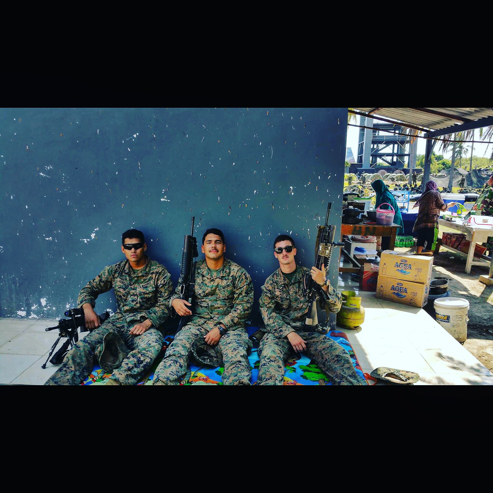
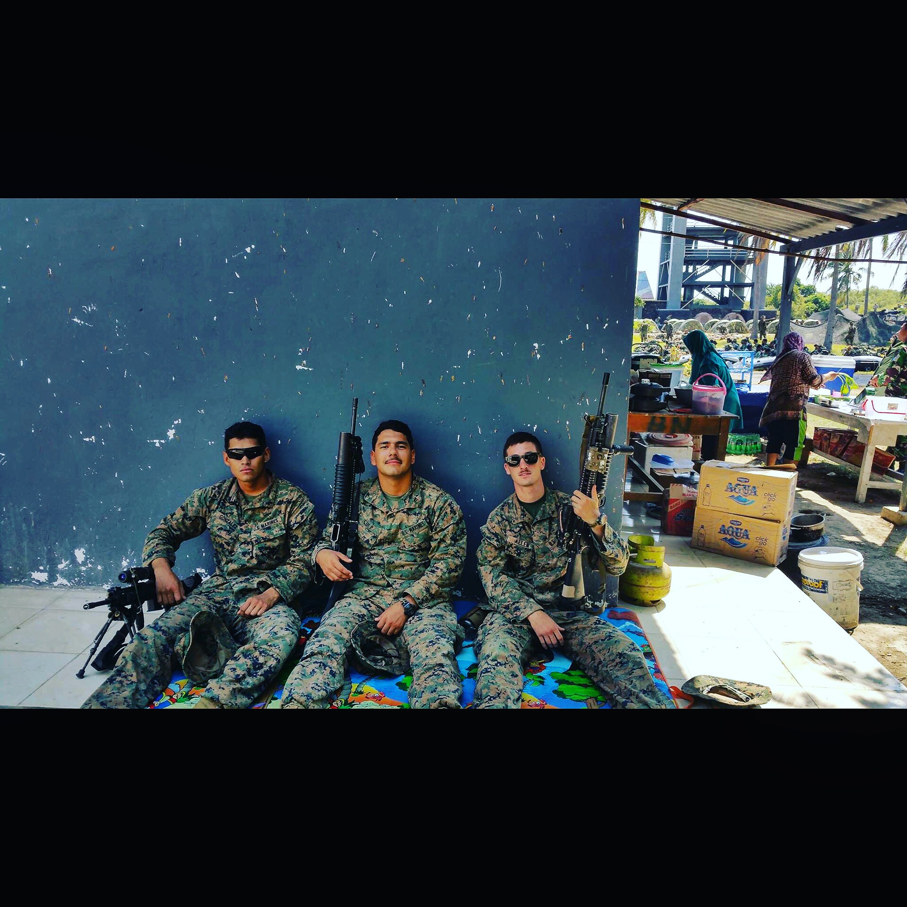

Bio
I am a senior here at Pace University expected to graduate in December. I would have been on track to graduate after this semester but I took the Fall semester off to attend General Assembly Web Development Immersive. At GA I learned REACT.JS, React Native, Express.Js, Node.Js, and PostgresSql. I am in the works of creating my first official mobile app made in React Native and will hopefully have it deployed at the beginning of summer and maybe even make my first start-up out of it! I am also trying to pick up some freelancing gigs as well. Feel free to check me out.
My PortfolioExperience
While at General Assembly I created numerous projects including...
Goals
My goals for this course is develop a stronger understanding of JS. Got to admit I lack in JS and the back end. As for my goals after Pace, I plan to either start my own company or get into a Front-End Developer role.